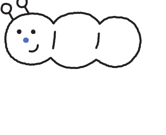
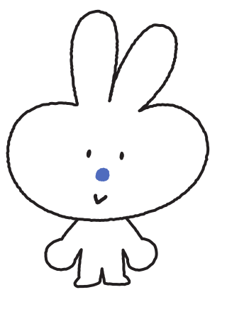

의약보건계열 · 권장
생명과학Ⅱ

생명 현상을 분자 수준에서 탐구하는 진로선택 과목. 간호·의예·생명공학 계열 지망생에게 권장됩니다.

꿈을 꾸는 클럽
고교학점제 종합지원
계열별 학과 안내
생명과학Ⅱ
관심 학과의 권장 과목으로 시간표를 자동 구성합니다. 우리 학교에 없는 과목은 공동교육과정으로 안내합니다.
진로선택 · 4단위 · 의약보건계열

생명 현상을 분자 수준에서 탐구하는 진로선택 과목. 간호·의예·생명공학 계열 지망생에게 권장됩니다.
흥미·적성·가치관 검사 결과를 입력하면 나만의 강점 카드를 만들어 줍니다.
| 학교 | 개설 과목 | 신청 | 확정 | 상태 |
|---|---|---|---|---|
| 천안고등학교 | 42 | 38 | 35 | 개설 확정 |
| 아산고등학교 | 39 | 31 | 28 | 개설 확정 |
| 공주고등학교 | 35 | 29 | 26 | 검토 중 |
| 서산고등학교 | 31 | 18 | 14 | 미달 |